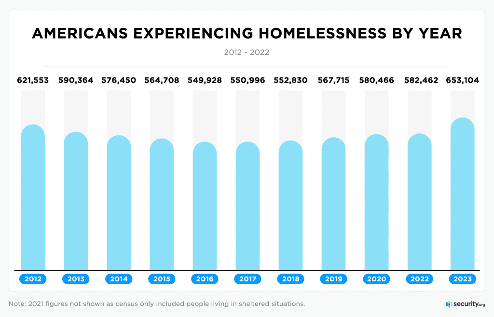
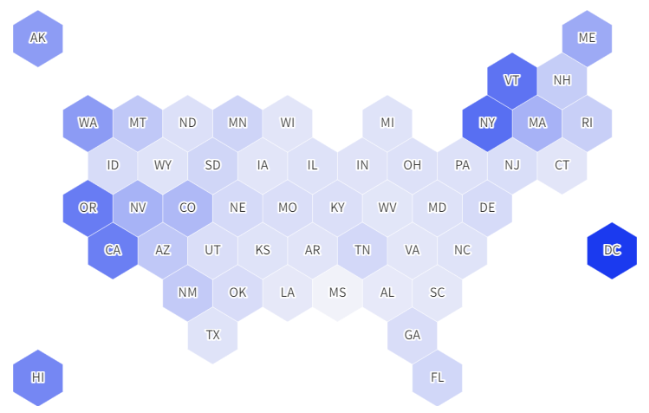
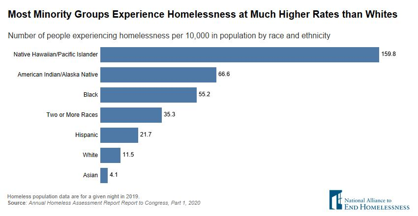

Homelessness has been on a continuous rise across the United States since 2016, with the situation
reaching its peak in 2023, marking the highest levels seen in the last decade. This issue does not
affect everyone equally, as different demographic groups and states experience varying degrees of
impact. The disparities in how homelessness affects these populations highlight the complexity and
uneven distribution of this growing crisis.

In this graph, the intensity of the blue shading indicates the level of homelessness in each state;
darker shades represent higher levels of homelessness. It is evident that the states on the coasts
are more susceptible to homelessness. Beyond having larger populations, these coastal states,
including New York, Washington D.C., California, and Oregon, face high living costs, which
significantly contribute to the scarcity of affordable housing. The combination of dense populations
and elevated living expenses makes it particularly challenging for individuals in these regions to
secure affordable housing, exacerbating the homelessness crisis. This pattern underscores how
economic factors, such as the cost of living, play a crucial role in the distribution of homelessness
across different states.

This graph, which depicts the number of people experiencing homelessness per 10,000 individuals,
reveals that certain racial groups are more vulnerable to homelessness than others. Native
Hawaiians/Pacific Islanders, in particular, are significantly affected, highlighting the fact
that minority groups experience homelessness at much higher rates compared to whites. Addressing
homelessness is crucial to ensuring that everyone can enjoy a decent standard of living without
facing unequal living conditions based on their racial or ethnic background. It is essential to
tackle this issue to promote better and equal living situations for all.